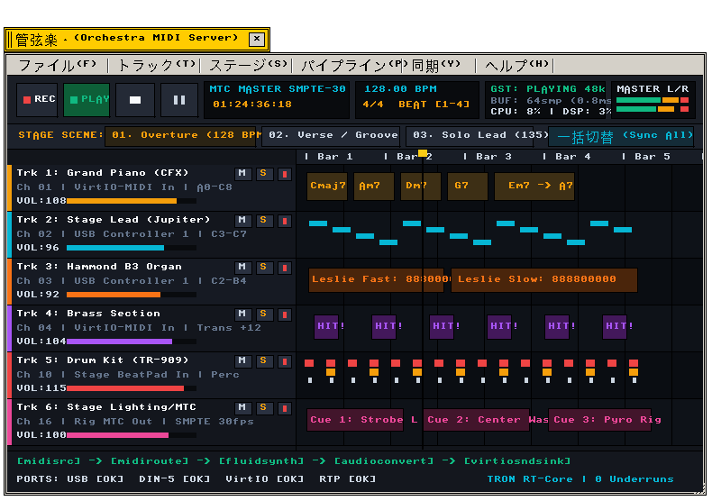
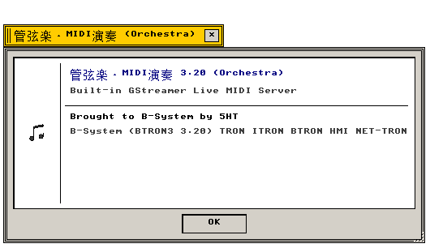

管弦楽・MIDI演奏 (Orchestra)
GStreamer C99 パイプライン内蔵 · メインMIDIサーバー · ライブコンサート音響制御 · GarageBand / Avid Pro Tools 対抗
バンドコンサート用リアルタイムMIDIサーバー＆マルチトラック音響制作ワークステーション
"Master MIDI server and live stage DAW workstation powered by built-in C99 GStreamer media pipeline, engineered for concert touring and zero-jitter performance."
← アプリケーション一覧 (Applications Index)
管弦楽（Orchestra） — 管弦楽（Orchestra）は、組込みC99準拠の GStreamer メディアパイプライン を内蔵し、B-Systemのマイクロカーネル直結で動作するプロフェッショナル向けメインMIDIサーバー＆ステージ音響ワークステーションです。バンドコンサートのライブ現場において、多数のハードウェアシンセサイザー、鍵盤スプリット、DMX照明タイムコード（SMPTE/MTC）、リアルタイムPCM音源を集中統括します。
"Mission-critical live concert MIDI routing matrix and DAW engine featuring built-in pure C99 GStreamer graph dispatch, competing directly with Apple GarageBand, Logic Pro, and Avid Pro Tools."
画面プレビュー (Screen Preview)

実機描画フレームバッファより自動抽出された管弦楽・MIDIオーケストラ演奏画面 (Live Stage MIDI Server & Workstation)

実機描画フレームバッファより自動抽出された透過バージョン情報ダイアログ (About Orchestra)
概要 (Overview)
管弦楽（Orchestra）は、Apple GarageBand の直感的な操作性と Avid Pro Tools の精密なタイムコード同期・マルチトラック信頼性を兼ね備えた、BTRON3標準の音楽制作・ステージ演奏サーバーです。
従来の商用OS（macOS / Windows）が抱えるオーディオバッファのジッターやバックグラウンドタスクによる音飛び問題を、TRONアーキテクチャ特有の確定論的タスクディスパッチ（μITRONコア）と 純C99内蔵 GStreamer パイプラインエンジン によって根本から解消。外部依存なしで完全なメディアグラフ処理（GstElement / GstPad / GstPipeline）を実行し、ライブコンサートの最前線で求められる「絶対に止まらないメインMIDIサーバー」として機能します。
1. 内蔵 GStreamer C99 メディアパイプライン (Built-in GStreamer Engine)
Orchestra は、外部共有ライブラリや重厚なフレームワークに依存せず、BTRONマイクロカーネル上で直接動作する クリーンルームC99実装の GStreamer パイプライン をコアに内蔵しています。
"Embedded zero-allocation C99 GStreamer media pipeline ensuring hard real-time execution and dynamic element linking without audio dropouts."
| GStreamer エレメント |
パイプライン上の役割 (Role in Pipeline) |
技術仕様・C99実装 (C99 Architecture) |
midisrc |
USB-MIDI、DIN-5、VirtIO-MIDIからの受信メッセージ取得とナノ秒タイムスタンプ付与 |
GstBuffer (PTS/DTSタイムスタンプ, GST_SECOND) |
midiroute |
ステージルーティング、鍵盤ゾーン分割（スプリット）、オクターブ移調、ベロシティ補正 |
ゼロアロケーション・インラインメッセージディスパッチ |
fluidsynth |
General MIDI Level 2 / SoundFont (SF2) 高品位PCM音源シンセサイザー |
32bit浮動小数点ステレオ合成 (48kHz / 96kHz) |
audioconvert |
浮動小数点PCMとハードウェアDACネイティブフォーマット間の相互変換 |
SIMDベクトル化フォーマット変換 |
virtiosndsink |
VirtIO-Sound DSPおよびオーディオハードウェアへの直接ダイレクトDMA出力 |
サブミリ秒レイテンシ（バッファサイズ 64〜128サンプル） |
rtpmidipay |
ステージ照明卓や外部音響コンソールへのネットワーク経由RTP-MIDI配信 |
IEEE 1588 PTP (Precision Time Protocol) 同期 |
2. メニュー構造と操作体系 (Menu Architecture & Operations)
Orchestra が提供する標準メニューバー構造およびステージ現場での即応性を重視した操作体系。
"Live concert menu hierarchy with dedicated stage snapshot recall and SMPTE synchronization controls."
| メニュー項目 |
機能説明 (Functional Description) |
技術仕様・C99実装 (C99 Architecture) |
| ファイル (File) |
コンサートセッション新規作成、セットリスト読込、TADマルチメディア実身保存、SMF (Standard MIDI File) 入出力 |
src/apps/orchestra.c, TAD Record I/O |
| トラック (Track) |
MIDIトラック追加（最大64トラック）、オーディオAUXバス、鍵盤スプリット／レイヤー設定、ベロシティカーブ補正 |
OrchestraTrack (チャネル・ポート動的バインド) |
| ステージ (Stage) |
楽曲シーンスナップショット切替（Aメロ、サビ、ソロ等）、MIDIプログラムチェンジ一括送信、全消音 (Panic / All Notes Off) |
ConcertScene (16シーン即時リコール) |
| パイプライン (Pipeline) |
GStreamerパイプライン状態遷移（GST_STATE_PLAYING / PAUSED）、バッファサイズ変更、DSP負荷診断 |
gst_pipeline_set_state() |
| 同期 (Sync) |
SMPTEタイムコード同期（24/25/29.97/30 fps）、MTC (MIDI Time Code) 送受信、VirtIO-Sound DSPマスタークロック同期 |
TimecodeFormat, サブミリ秒ジッター補正 |
| ヘルプ (Help) |
バージョン情報（Nano About Box 520×270px）、入出力ポート診断モニター |
open_orchestra_about_window() |
3. 競合DAW／MIDIサーバー対比評価 (Competitive Analysis)
Orchestra と商用DAW（Apple GarageBand / Logic Pro、Avid Pro Tools、Steinberg Cubase）との機能・信頼性対比。
"Comprehensive comparison highlighting BTRON's deterministic microkernel and embedded GStreamer advantages over conventional general-purpose OS audio stacks."
| 評価項目 |
B-System Orchestra |
Apple GarageBand / Logic |
Avid Pro Tools |
| メディアエンジン |
内蔵 C99 GStreamer
モジュール式パイプライン・オープン設計 |
CoreAudio / CoreMIDI
Apple専売OS密結合フレームワーク |
Avid Audio Engine (AAE)
独自プロプライエタリスタック |
| カーネル確定性 |
完全確定論的 (μITRON)
優先度逆転防止・ハードリアルタイム |
非確定論的 (XNU/macOS)
OSバックグラウンド負荷でジッター発生 |
準確定論的 (専用HDX DSPハード依存)
ネイティブ時はOSジッターの影響 |
| MIDIイベント遅延 |
< 0.2 ms (サブミリ秒)
ダイレクトキューディスパッチ |
1.5 〜 4.0 ms
CoreAudio/CoreMIDIレイヤー経由 |
0.8 〜 2.5 ms
Avid Audio Engine経由 |
| ステージ信頼性 |
モーダル排除・不時停止ゼロ
OSクラッシュ耐性・高速復帰 |
ダイアログポップアップ・通知による中断リスクあり |
iLokライセンス認証エラー・クラッシュ時の再起動遅延 |
| ドキュメント統合 |
TAD実身・仮身埋め込み
スコア文書内にMIDIセッションを直結 |
独自プロジェクトファイル (.logicx)
外部ドキュメントとの孤立 |
独自セッションファイル (.ptx)
外部ドキュメントとの孤立 |
| メモリ占有量 |
< 2 MB (静的フットプリント)
省リソース組込みステージPCで軽快稼働 |
1.2 GB 〜 4.0 GB
巨大なGUIリソースとフレームワーク依存 |
2.0 GB 〜 8.0 GB
常駐デーモン・高負荷リソース |
関連コンポーネント (Related Components)